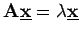
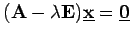

Inhalt Index DeskTop Bronstein
Lineare Algebra Eigenwertaufgaben bei Matrizen Spezielles Eigenwertproblem
Für das spezielle Eigenwertproblem  bzw.  (4.124) gelten im Falle einer reellen symmetrischen Matrix die folgenden Aussagen: